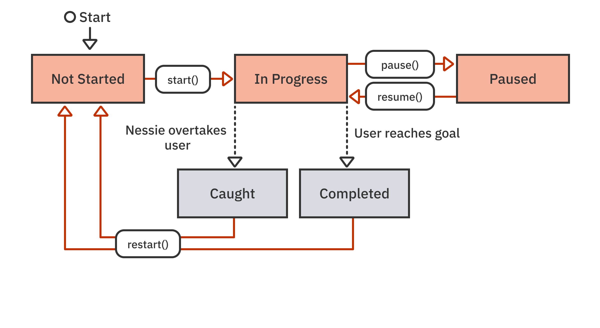
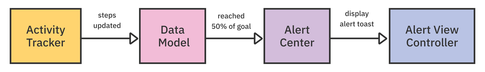
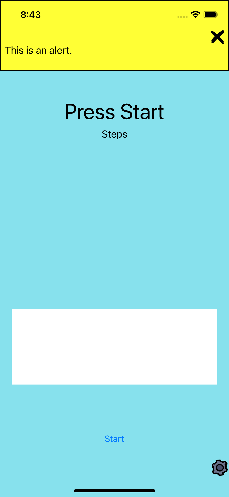

5：测试期望值¶
在前面的章节中，你根据用户对Start按钮的操作建立了应用程序的状态。该应用程序的主要部分依赖于对用户移动和记录步骤时的变化做出反应。这些动作会在程序的控制之外产生事件。XCTestExpectation是测试直接流程之外发生的事情的工具。
在这一章中，你将学习：
- 一般测试期望
- 通知的期望
使用本章的启动项目，而不是继续上一章的最终项目，因为它有一些补充内容来帮助你。
使用一个期望值¶
XCTest期望有两个部分：期望和等待者。一个期望是一个你以后可以实现的对象。XCTestCase的等待方法告诉测试执行者要等待，直到期望被满足或指定的时间过去。
在上一章中，你建立了与用户直接行动相对应的应用程序状态：正在进行，暂停，和未开始。在这一章中，你将添加对caught和completed的支持。
这些状态的转换是对用户控制之外的异步事件的响应。

红色阴影的状态已经被建立。你将会添加灰色的状态。
编写一个异步测试¶
为了对异步事件做出反应，代码需要一种方法来监听一个变化。这通常是通过一个闭包，一个委托方法，或通过观察一个通知来完成。
为了测试AppModel中异步更新的捕获和完成的状态变化，你将添加一个回调闭包。第一步是编写测试!
打开AppModelTests.swift，在// MARK: - State Changes下添加以下测试：
func testAppModel_whenStateChanges_executesCallback() {
// given
givenInProgress()
var observedState = AppState.notStarted
// 1
let expected = expectation(description: "callback happened")
sut.stateChangedCallback = { model in
observedState = model.appState
// 2
expected.fulfill()
}
// when
sut.pause()
// then
// 3
wait(for: [expected], timeout: 1)
XCTAssertEqual(observedState, .paused)
}
这个测试使用sut.pause更新appState，然后检查stateChangedCallback是否被触发，并将observedState设置为新值。你在这个测试中使用了一些新东西。
expectation(description:)是一个XCTestCase方法，它创建了一个XCTestExpectation对象。该描述有助于在测试日志中识别失败。你很快就会看到expectation是如何被用来跟踪期望是否实现和何时实现的。fulfill()在期望上被调用，以表明它已经被完成--具体来说，回调已经发生。这里的stateChangedCallback将在状态变化发生时触发sut。wait(for:timeout:)导致测试运行器暂停，直到所有期望被满足或超时时间（秒）过去。在等待完成之前，断言将不会被调用。
该测试不会被编译，因为stateChangedCallback还不存在。打开AppModel.swift，在该类中添加以下内容：
var stateChangedCallback: ((AppModel) -> Void)?
添加这个属性后，测试就可以建立了。现在运行它，你会在控制台中看到以下故障：
Asynchronous wait failed: Exceeded timeout of 1 seconds, with unfulfilled expectations: "callback happened".
该期望从未得到满足，所以测试在1秒的等待超时后失败。
为了解决这个问题，将AppModel中的appState改为与以下内容一致：
private(set) var appState: AppState = .notStarted {
didSet {
stateChangedCallback?(self)
}
}
现在每次设置AppState时都会触发回调。
回到AppModelTests.swift中，通过在tearDownWithError的顶部添加以下内容来清理回调引用：
sut.stateChangedCallback = nil
再次运行测试，现在它将通过!
Note
最好的做法是总是在完成块中调用履行，然后在等待后使用XCTAssert测试错误或其他负面条件。超时不应该被用来作为测试失败的信号，因为它给测试增加了大量时间。
测试真正的异步性¶
最后一个测试检查了回调是否是直接响应sut上的更新而调用的。接下来，你将通过视图控制器的更新来解决更间接的使用。打开StepCountControllerTests.swift，在// MARK: - Terminal States的末尾添加以下两个测试：
func testController_whenCaught_buttonLabelIsTryAgain() {
// given
givenInProgress()
let exp = expectation(description: "button title change")
let observer = ButtonObserver()
observer.observe(sut.startButton, expectation: exp)
// when
whenCaught()
// then
waitForExpectations(timeout: 1)
let text = sut.startButton.title(for: .normal)
XCTAssertEqual(text, AppState.caught.nextStateButtonLabel)
}
func testController_whenComplete_buttonLabelIsStartOver() {
// given
givenInProgress()
let exp = expectation(description: "button title change")
let observer = ButtonObserver()
observer.observe(sut.startButton, expectation: exp)
// when
whenCompleted()
// then
waitForExpectations(timeout: 1)
let text = sut.startButton.title(for: .normal)
XCTAssertEqual(text, AppState.completed.nextStateButtonLabel)
}
这些测试观察startButton的标题，以确认它在模型状态改变后正确更新。
observe(_:expectation:)将在sut.startButton的textLabel被更新时实现传递的期望值（exp）。这需要ButtonObserver辅助类，你将会创建这个类。
在测试类组中添加一个新的Swift文件，命名为ButtonObserver.swift。用以下内容替换该文件的内容：
import XCTest
class ButtonObserver {
var token: NSKeyValueObservation?
func observe(_ button: UIButton, expectation:
XCTestExpectation) {
token = button
.observe(\.titleLabel?.text, options: [.new]) { _, _ in
expectation.fulfill()
}
}
deinit {
token?.invalidate()
}
}
ButtonObserver通过使用键值观察，观察UIButton的titleLabel文本的变化。当文本发生变化时，会有一个回调到observeValue(forKeyPath:of:change:context:)。这个对象保持着所提供的XCTestExpectation，并在该回调中完成它。
接下来，打开StepCountControllerTests.swift在// MARK: - When下添加以下测试助手：
func whenCaught() {
AppModel.instance.setToCaught()
}
func whenCompleted() {
AppModel.instance.setToComplete()
}
构建并运行StepCountControllerTests测试，你会在控制台看到几个失败的例子：
XCTAssertEqual failed: ("Optional("Pause")") is not equal to ("Optional("Try Again")")
XCTAssertEqual failed: ("Optional("Pause")") is not equal to ("Optional("Start Over")")
当测试中调用whenCaught()和whenCompleted()时，按钮的标题并没有更新，因为在生产代码中还没有任何钩子可以做到这一点。在StepCountController.swift的viewDidLoad中添加以下内容来解决这个问题：
AppModel.instance.stateChangedCallback = { model in
DispatchQueue.main.async {
self.updateUI()
}
}
stateChangedCallback现在被用来在模型中的appState被更新时更新UI。现在测试将通过，你可以继续前进了。
Note
在调试器中停止执行并不能暂停等待超时。你只是添加了一堆代码，如果有一个错误，你可能会回去调试这个问题。这在编写测试时很常见，特别是当测试的行为不符合预期时。当调试器在断点处暂停，你探索逻辑错误时，要注意测试可能会因超时而失败。只需禁用或删除断点，一旦问题得到纠正，再重新运行。
等待通知¶
在应用程序构建的下一阶段，你将添加一个功能，在事件发生时直观地通知用户，如达到一个里程碑式的目标或当Nessie赶上。
除了在任意回调中实现预期外，还有一个功能是允许测试等待用户通知。
建立警报中心¶
一个活动应用程序或游戏的一个重要功能是在重要事件发生时更新用户。在FitNess中，这些更新是由一个AlertCenter管理的。当有趣的事情发生时，代码会向AlertCenter发布警报。警报中心负责管理一堆信息，以显示给用户。

AlertCenter使用Notifications来与处理屏幕上的警报的视图控制器进行通信。因为这是异步发生的，所以使用XCTestExpectation进行测试是一个很好的案例。
AlertCenter和AlertCenterTests的存根实现已经被添加到项目中，以加快事情的进展。
为了测试通知行为，打开AlertCenterTests.swift并添加以下测试：
func testPostOne_generatesANotification() {
// given
let exp = expectation(
forNotification: AlertNotification.name,
object: sut,
handler: nil)
let alert = Alert("this is an alert")
// when
sut.postAlert(alert: alert)
// then
wait(for: [exp], timeout: 1)
}
expectation(forNotification:object:handler:)创建一个期望，当一个通知发布时，期望就会实现。在这种情况下，当AlertNotification.name被发布到sut时，该期望就被满足了。然后测试发布一个新的Alert，并等待该通知被发送。
注意，使用等待作为测试断言通常不是一个好主意。wait只测试一个期望的实现，并不对应用程序的逻辑做任何声明。你将在本章稍后测试通知的内容。
构建和测试，这个测试会失败。如果你看一下控制台中的错误，你会看到一个超时失败：
Asynchronous wait failed: Exceeded timeout of 1 seconds, with unfulfilled expectations: "Expect notification 'Alert' from FitNess.AlertCenter".
是时候实现应用代码来解决这个问题了! 打开AlertCenter.swift，用以下内容替换postAlert(alert:)的stub实现：
func postAlert(alert: Alert) {
let notification = Notification(
name: AlertNotification.name,
object: self)
notificationCenter.post(notification)
}
这将创建并发布你的测试正在监听的通知。注意，目前没有使用已通过的警报，但你以后会回到这个问题上。
建立和测试。测试将通过! :]
等待多个事件¶
接下来，尝试测试发布两个警报是否会发送两个通知。在AlertCenterTests的末尾添加以下内容：
func testPostingTwoAlerts_generatesTwoNotifications() {
//given
let exp1 = expectation(
forNotification: AlertNotification.name,
object: sut,
handler: nil)
let exp2 = expectation(
forNotification: AlertNotification.name,
object: sut,
handler: nil)
let alert1 = Alert("this is the first alert")
let alert2 = Alert("this is the second alert")
// when
sut.postAlert(alert: alert1)
sut.postAlert(alert: alert2)
// then
wait(for: [exp1, exp2], timeout: 1)
}
这创建了两个等待AlertNotification.name的期望，发布两个不同的警报，并等待两个警报的通知。
构建和测试，它将通过。然而，这个测试有点天真。要想知道如何，请删除这一行：
sut.postAlert(alert: alert2)
现在你只发布了与等待要求的期望值相联系的两个警报中的一个。
再测试一次，仍然会通过！这是因为两个期望是相同的。这是因为这两个期望所期望的是同一件事。它们是平行运行的--它们没有堆叠。因此，只要有一个警报被发布，两个期望就都被满足了。
为了解决这个难题，你可以使用通知期望的expectedFulfillmentCount属性来完善实现条件。将testPostingTwoAlerts_generatesTwoNotifications()改为以下内容：
func testPostingTwoAlerts_generatesTwoNotifications() {
//given
let exp = expectation(
forNotification: AlertNotification.name,
object: sut,
handler: nil)
exp.expectedFulfillmentCount = 2
let alert1 = Alert("this is the first alert")
let alert2 = Alert("this is the second alert")
// when
sut.postAlert(alert: alert1)
// then
wait(for: [exp], timeout: 1)
}
将expectedFulfillmentCount设置为2，意味着在超时前两次调用fulfill()时才会满足期望。
运行测试，你会看到它失败了，因为你只调用了postAlert一次。这就很好地证明了你的测试是按预期工作的
在when部分，在sut.postAlert(alert: alert1)下加回第二个postAlert：
sut.postAlert(alert: alert2)
再次运行该测试，你会看到它通过了。
期待某些事情不发生¶
好的测试套件不仅要测试事情是否按计划发生，而且要检查某些副作用是否发生。应用程序不应该做的事情之一是向用户发送垃圾警报。因此，如果一个特定的警报被发布两次，它应该只产生一个通知。
当然，你也可以对这种情况进行测试。添加以下测试：
func testPostDouble_generatesOnlyOneNotification() {
//given
let exp = expectation(
forNotification: AlertNotification.name,
object: sut,
handler: nil)
exp.expectedFulfillmentCount = 2
exp.isInverted = true
let alert = Alert("this is an alert")
// when
sut.postAlert(alert: alert)
sut.postAlert(alert: alert)
// then
wait(for: [exp], timeout: 1)
}
这几乎与上一个一模一样，除了这一行：
exp.isInverted = true
当期望值被倒置时，表明如果期望值被满足，则此测试失败，如果等待超时则成功。换句话说，如果两个警报触发了两个通知，这个测试就会失败。
现在，该测试失败了，因为应用程序代码目前允许发布多个警报。
打开AlertCenter.swift。添加以下实例变量：
private var alertQueue: [Alert] = []
alertQueue将是AlertCenter的一个重要部分。它将有助于为用户管理潜在的大堆消息，因为它们可能在后台积累。
接下来在postAlert(alert:)的顶部添加以下语句：
guard !alertQueue.contains(alert) else { return }
alertQueue.append(alert)
如果同一个警报被传递给postAlert(alert:)两次，第二次将被忽略。
建立并再次测试。全是绿色的!
请确保不时地运行所有的测试，以确保一个测试的修复不会破坏另一个测试。
向用户显示警报¶
在应用程序的架构中，RootViewController负责通过其alertContainer视图向用户显示警报。
在App Layer文件夹中的Cases下创建一个新的单元测试案例类文件。命名为RootViewControllerTests.swift。
添加以下导入：
@testable import FitNess
接下来，将类中的测试模板替换为：
var sut: RootViewController!
override func setUpWithError() throws {
try super.setUpWithError()
sut = getRootViewController()
}
override func tearDownWithError() throws {
sut = nil
try super.tearDownWithError()
}
最后，为基本条件添加一个测试：即当视图控制器被加载时，没有显示任何警报：
// MARK: - Alert Container
func testWhenLoaded_noAlertsAreShown() {
XCTAssertTrue(sut.alertContainer.isHidden)
}
运行这个并确认它通过。
接下来，添加以下内容来测试当有警报时，警报容器会被显示出来：
func testWhenAlertsPosted_alertContainerIsShown() {
// given
let exp = expectation(
forNotification: AlertNotification.name,
object: nil,
handler: nil)
let alert = Alert("show the container")
// when
AlertCenter.instance.postAlert(alert: alert)
// then
wait(for: [exp], timeout: 1)
XCTAssertFalse(sut.alertContainer.isHidden)
}
一个期望将由AlertNotification.name来实现，postAlert(alert:)被调用以最终触发通知。在等待期望后，XCTAssertFalse检查alertContainer是否可见。
现在是时候通过添加代码来显示警报，使测试通过。回到RootViewController.swift，在viewDidLoad的底部添加以下内容：
AlertCenter.listenForAlerts { center in
self.alertContainer.isHidden = false
}
AlertCenter.listenForAlerts(_:)是一个辅助方法，你将创建它来注册警报通知，并运行传递的闭包。该闭包在触发时将取消对alertContainer的隐藏。
打开AlertCenter.swift，找到// MARK: - Class Helpers扩展，添加以下内容：
class func listenForAlerts(
_ callback: @escaping (AlertCenter) -> Void){
instance.notificationCenter
.addObserver(
forName: AlertNotification.name,
object: instance,
queue: .main) { _ in
callback(instance)
}
}
listenForAlerts(_:)添加AlertCenter作为AlertNotification.name通知的观察者，触发回调。这将导致alertContainer显示在RootViewController中。
建立并运行你的新测试，它现在应该通过了。
持续重构¶
当你只运行testWhenLoaded_noAlertsAreShown()时，它将通过。如果你运行RootViewControllerTests中的所有测试，那么testWhenLoaded_noAlertsAreShown()可能会失败。
这是因为sut状态与正在运行的UIApplication相联系，并在运行之间被保留下来。如果testWhenAlertsPosted_alertContainerIsShown()先运行并显示了警告，那么当testWhenLoaded_noAlertsAreShown()检查是否有显示时，它仍然会在那里。
为了解决这个问题，你要重构代码，建立一种方法来清除所有的警报，并在测试之间重置视图。
首先，你需要一个连接AlertCenter状态的接口。在AlertCenterTests.swift中添加以下测试：
// MARK: - Alert Count
func testWhenInitialized_AlertCountIsZero() {
XCTAssertEqual(sut.alertCount, 0)
}
这意味着AlertCenter需要一个alertCount变量来编译测试。在AlertCenter.swift中给该类添加以下属性：
var alertCount: Int {
return alertQueue.count
}
建立并测试testWhenInitialized_AlertCountIsZero()，你会看到它现在通过了。
在添加新功能时，覆盖基本条件也很重要。在AlertCenterTests.swift中添加以下内容：
func testWhenAlertPosted_CountIsIncreased() {
// given
let alert = Alert("An alert")
// when
sut.postAlert(alert: alert)
// then
XCTAssertEqual(sut.alertCount, 1)
}
func testWhenCleared_CountIsZero() {
// given
let alert = Alert("An alert")
sut.postAlert(alert: alert)
// when
sut.clearAlerts()
// then
XCTAssertEqual(sut.alertCount, 0)
}
testWhenAlertPosted_CountIsIncreased()测试发布警报会增加你为先前测试所添加的alertCount。
testWhenCleared_CountIsZero()测试一个新方法，clearAlerts()，你需要创建这个方法。首先，你要在tearDownWithError中运行它，在该方法的顶部添加以下内容：
AlertCenter.instance.clearAlerts()
由于AppModelTests间接地扰乱了DataModel的状态，它们也会触发需要清除的警报。打开AppModelTests.swift，在tearDownWithError的顶部添加以下内容：
AlertCenter.instance.clearAlerts()
这样可以确保在每次测试修改AlertCenter的状态后都能重置。打开AlertCenter.swift，给AlertCenter添加以下内容：
// MARK: - Alert Handling
func clearAlerts() {
alertQueue.removeAll()
}
这允许你从alertQueue中删除所有的警报，这可以用来解决你在测试之间持续存在的警报问题。但首先，还有一个地方你需要使用你的新alertCount。
回到RootViewController.swift，将viewDidLoad中的listenForAlerts回调块改为：
self.alertContainer.isHidden = center.alertCount == 0
现在，当一个警报被触发时，只有在当前有一个以上的警报时，你才显示alertContainer。你头晕了吗？通过TDD，添加功能需要在应用程序和测试代码之间来回循环。
最后，你可以通过在RootViewControllerTests.swift中添加到tearDownWithError的顶部来修复破碎的testWhenLoaded_noAlertsAreShown：
AlertCenter.instance.clearAlerts()
现在alertQueue将在每次测试后清除，防止修改队列的测试相互影响。
随着计数的重置，你只需要在每次测试开始时清除任何现有的警报，以避免你在testWhenLoaded_noAlertsAreShown()中观察到的持久性问题。在setUpWithError的底部添加以下内容：
sut.reset()
现在所有的测试都会通过，无论执行顺序如何。
如果你想在实践中看到警报视图，请暂时将StepCountController.swift中的startStopPause(_:)替换为以下内容：
@IBAction func startStopPause(_ sender: Any?) {
let alert = Alert("Test Alert")
AlertCenter.instance.postAlert(alert: alert)
}
现在，它将在任何状态变化时显示一个警报。建立和运行。当应用程序加载时，点击Start。

现在撤销这些改变，继续进行更多的期望测试。
获取通知的具体信息¶
为了确保用户界面得到有效的更新，除了名称之外，向警报通知添加额外的信息将是非常有用的。
特别是，在通知的userInfo中添加相关的Alert将是有用的。
打开AlertCenterTests.swift，在AlertCenterTests中添加以下内容：
// MARK: - Notification Contents
func testNotification_whenPosted_containsAlertObject() {
// given
let alert = Alert("test contents")
let exp = expectation(
forNotification: AlertNotification.name,
object: sut,
handler: nil)
var postedAlert: Alert?
sut.notificationCenter.addObserver(
forName: AlertNotification.name,
object: sut,
queue: nil) { notification in
let info = notification.userInfo
postedAlert = info?[AlertNotification.Keys.alert] as? Alert
}
// when
sut.postAlert(alert: alert)
// then
wait(for: [exp], timeout: 1)
XCTAssertNotNil(postedAlert, "should have sent an alert")
XCTAssertEqual(
alert,
postedAlert,
"should have sent the original alert")
}
除了使用通知期望外，这个测试还为AlertNotification设置了一个额外的监听器。在观察闭包中，预期在userInfo中的Alert被存储起来，因此它可以在测试断言中进行比较。
Note
虽然你应该努力使每个测试只有一个断言，但如果它们都确认相同的事实，也可以有多个断言。在这个例子中，你试图验证通知是否包含与发布的警报对象相同。检查通知中的警报是否为零是验证的一部分，将其与发布的警报进行比较也是验证的一部分。
为了让这个测试通过，你必须把警报对象添加到通知中。打开AlertCenter.swift将postAlert(alert:)中的let notification = ...行改为：
let notification = Notification(
name: AlertNotification.name,
object: self,
userInfo: [AlertNotification.Keys.alert: alert])
这将把发布的警报对象添加到通知中，所以它可以在测试的闭合中被观察到。现在运行testNotification_whenPosted_containsAlertObject()，你应该看到另一个绿色测试。
从数据模型中驱动警报¶
为了推动用户参与，并在他们接近目标时给他们一种成就感，在用户达到某些里程碑时向他们展示信息是很重要的。
为了给用户一个积极的开端，在某些里程碑上给他们提示，以鼓励他们。当他们达到目标的25%、50%和75%时，他们应该看到一个鼓励的提示，而在100%时，则是一个祝贺的提示。
在Alert扩展中已经有一些硬编码的值。
在编写下一组测试之前，创建一个新的帮助文件。在测试扩展组下添加一个新的组：Alerts。然后添加一个名为Notification+Tests.swift的新Swift文件。
在新文件中添加以下代码，在import Foundation的下面：
@testable import FitNess
extension Notification {
var alert: Alert? {
return userInfo?[AlertNotification.Keys.alert] as? Alert
}
}
这个辅助扩展将使我们更容易从通知中获得Alert对象。你可以相当确信这一点，因为testNotification_whenPosted_containsAlertObject()测试类似于建立userInfo。你也可以回去更新那个测试，以使用这个新的帮助器。TDD的胜利!
现在你可以开始写测试来检查里程碑通知的生成。
打开DataModelTests.swift在DataModelTests的末尾添加以下测试：
// MARK: - Alerts
func testWhenStepsHit25Percent_milestoneNotificationGenerated() {
// given
sut.goal = 400
let exp = expectation(
forNotification: AlertNotification.name,
object: nil) { notification -> Bool in
return notification.alert == Alert.milestone25Percent
}
// when
sut.steps = 100
// then
wait(for: [exp], timeout: 1)
}
在这个测试中，设置期望时使用了可选的处理程序闭包。该闭包将Notification作为输入，并返回一个Bool，表示是否应该实现该期望。在这里，只有当警报是.milestone25Percent时，你才会实现期望。在目标设置为400的情况下，将步骤设置为100应该会触发该警报并实现你的期望。
为了实现这一目标，你需要更新DataModel以在适当的时候触发25%的警报。
首先打开DataModel.swift。接下来，用以下内容替换var step：
var steps: Int = 0 {
didSet {
updateForSteps()
}
}
现在，步骤数的变化将触发updateForSteps()，它将发布必要的里程碑警报。
最后，在restart()下面添加以下方法：
// MARK: - Updates due to distance
func updateForSteps() {
guard let goal = goal else { return }
if Double(steps) >= Double(goal) * 0.25 {
AlertCenter.instance.postAlert(
alert: Alert.milestone25Percent)
}
}
现在，当步骤达到目标的25%时，你发布Alert.milestone25Percent。建立并测试testWhenStepsHit25Percent_milestoneNotificationGenerated()，当警报生成时，它将通过。
之前的测试让你知道，因为警报被生成，它将被显示给用户。你必须等待下一章才能看到实际的步骤计数器的运行。
自己再添加三个测试：50%、75%和100%的完成率各一个，目标是400。
- 50%: 使用
Alert.milestone50Percent和step = 200作为when条件。 - 75%: 使用
Alert.milestone75Percent和step = 300作为when条件。 - 100%: 使用
Alert.goalComplete和step = 400作为when条件。
在updateForSteps中为每个条件重复if语句，以使测试通过。有了这些独立的if语句，updateForSteps将在触发时发布所有的警报，直到当前的阈值；你还不应该解决这个问题。你还需要在测试的tearDownWithError中添加AlertCenter.instance.clearAlerts()，以便每次都能冲刷掉警报队列。
对多种期望的测试¶
你的新的里程碑通知测试看起来都很相似。这是一个指标，你应该重构它们以减少重复代码。
还是在DataModelTests.swift中，在// MARK: - Given下添加一个新方法：
func givenExpectationForNotification(alert: Alert) -> XCTestExpectation {
let exp = expectation(
forNotification: AlertNotification.name,
object: nil) { notification -> Bool in
return notification.alert == alert
}
return exp
}
这个辅助方法创建了一个期望，等待包含传递的警报的通知。接下来，重构testWhenStepsHit25Percent_milestoneNotificationGenerated()以使用这个辅助方法。用以下内容替换期望值的定义：
let exp = givenExpectationForNotification(alert: .milestone25Percent)
对其他三个里程碑测试做同样的工作。
现在你可以写一个测试，检查所有这些警报是否生成，每个警报都是按顺序生成的。
在DataModelTests中添加以下测试：
func testWhenGoalReached_allMilestoneNotificationsSent() {
// given
sut.goal = 400
let expectations = [
givenExpectationForNotification(alert: .milestone25Percent),
givenExpectationForNotification(alert: .milestone50Percent),
givenExpectationForNotification(alert: .milestone75Percent),
givenExpectationForNotification(alert: .goalComplete)
]
// when
sut.steps = 400
// then
wait(for: expectations, timeout: 1, enforceOrder: true)
}
到目前为止，你一直在使用wait(for:timeout:)与一个只有一个期望值的数组。这里你可以看到为什么接受一个数组是有用的。它允许你提供多个期望并等待所有的期望被实现。
这里还显示了可选的enforceOrder参数。这不仅确保了所有的期望都得到了满足，而且这些满足是按照输入数组指定的顺序进行的。
顺序检查允许进行复杂的测试。例如，你可以在编写一个多步骤流程的测试时使用它，如图像过滤或需要多个API调用（如OAuth或SAML）的网络登录。这些测试不仅可以确保所有的步骤在生产代码中以必要的顺序发生，还可以验证你的测试代码没有经历与预期不同的流程。
完善需求¶
前面的单元测试在验证应用程序时有一个缺陷。他们测试的是应用程序的状态快照，没有考虑到应用程序是动态的。
在进行时，应用程序会不断地更新步数，重要的是不要在每一步都向用户发送垃圾邮件，而只是在第一次越过阈值时提醒他们。此外，用户可以选择清除警报，所以如果早期的警报被用户清除了，添加到postAlert(alert:)中的防护措施不会阻止重复警报。
总是先测试，打开AlertCenterTests.swift，在AlertCenterTests的底部添加这个：
// MARK: - Clearing Individual Alerts
func testWhenCleared_alertIsRemoved() {
// given
let alert = Alert("to be cleared")
sut.postAlert(alert: alert)
// when
sut.clear(alert: alert)
// then
XCTAssertEqual(sut.alertCount, 0)
}
这测试了如果一个警报被添加，然后被清除，AlertCenter中就没有警报了。
为了通过测试，在AlertCenter.swift的"Alert Handling"部分添加以下方法：
func clear(alert: Alert) {
if let index = alertQueue.firstIndex(of: alert) {
alertQueue.remove(at: index)
}
}
这将从alertQueue中删除已通过的警报。运行你的测试，它们应该都会再次通过。
接下来，打开DataModelTests.swift并添加以下内容：
func testWhenStepsIncreased_onlyOneMilestoneNotificationSent() {
// given
sut.goal = 10
let expectations = [
givenExpectationForNotification(alert: .milestone25Percent),
givenExpectationForNotification(alert: .milestone50Percent),
givenExpectationForNotification(alert: .milestone75Percent),
givenExpectationForNotification(alert: .goalComplete)
]
// clear out the alerts to simulate user interaction
let alertObserver = AlertCenter.instance.notificationCenter
.addObserver(
forName: AlertNotification.name,
object: nil,
queue: .main) { notification in
if let alert = notification.alert {
AlertCenter.instance.clear(alert: alert)
}
}
// when
for step in 1...10 {
self.sut.steps = step
sleep(1)
}
// then
wait(for: expectations, timeout: 20, enforceOrder: true)
AlertCenter.instance.notificationCenter
.removeObserver(alertObserver)
}
这是你最繁忙的测试，它有几个部分：
given定的部分设置了一个里程碑式的警报预期序列。- 一个单独的观察者观察警报并从
AlertCenter中清除它们。这确保了重复的通知不会因为还没有被用户驳回而被忽略。 when部分通过单独越过一系列的里程碑来递增步骤以产生警报。在测试中使用睡眠或等价物应该只做少量的，因为这大大增加了测试时间。这里有必要为通知的发布和清除提供时间。then部分使用等待来测试期望是否如期实现。在测试结束时，你要删除alertObserver以防止它影响其他测试。
现在测试将通过，这违反了TDD的步骤，即先写一个失败的测试。这是因为现在它没有强制要求每个里程碑应该有一个通知。这必须要在期望本身中完成。
还是在DataModelTests.swift中，将givenExpectationForNotification(alert:)改为以下内容：
func givenExpectationForNotification(alert: Alert) -> XCTestExpectation {
let exp = XCTNSNotificationExpectation(
name: AlertNotification.name,
object: AlertCenter.instance,
notificationCenter: AlertCenter.instance.notificationCenter)
exp.handler = { notification -> Bool in
return notification.alert == alert
}
exp.expectedFulfillmentCount = 1
exp.assertForOverFulfill = true
return exp
}
为了创建一个XCTNSNotificationExpectation，这是一个具有更多通知特定功能的XCTestExpectation，它抛弃了便利方法。你设置了expectedFulfillmentCount和assertForOverFulfill，如果期望的实现超过了计数，就会产生一个断言。
现在，测试将失败，因为一个警报被重复多个步骤。为了使测试通过，必须修改DataModel以跟踪已发送的警报。
打开DataModel.swift，在该类的顶部添加以下内容：
// MARK: - Alerts
var sentAlerts: [Alert] = []
接下来，将updateForSteps()替换为以下内容：
private func checkThreshold(percent: Double, alert: Alert) {
guard !sentAlerts.contains(alert),
let goal = goal else {
return
}
if Double(steps) >= Double(goal) * percent {
AlertCenter.instance.postAlert(alert: alert)
sentAlerts.append(alert)
}
}
func updateForSteps() {
checkThreshold(percent: 0.25, alert: .milestone25Percent)
checkThreshold(percent: 0.50, alert: .milestone50Percent)
checkThreshold(percent: 0.75, alert: .milestone75Percent)
checkThreshold(percent: 1.00, alert: .goalComplete)
}
这就把代码清理了一下，现在不仅检查阈值是否被越过，而且还检查警报是否已经发出。这样一来，如果用户越过了阈值，并取消了警报，他们就不会再看到同样的警报。
最后，在restart()的末尾添加以下内容：
sentAlerts.removeAll()
这可以确保重启时清除你的警报。构建和运行，测试应该全部通过!
使用其他类型的期望¶
在测试异步进程的大部分时间里，你会使用常规的XCTestExpectation。XCTNSNotificationExpectation涵盖了大多数其他需求。对于特定的用途，还有另外两个库存期望。XCTKVOExpectation和XCTNSPredicateExpectation。
这些都是在寻找它们的同名条件。KVO期望观察keyPath的变化，而谓词期望则等待其谓词为真。
有一个地方你已经使用了KVO的期望，那就是StepCountControllerTests.swift中的ButtonObserver。你可以用一个基于KVO的XCTestExpectation来完全取代那个辅助类。与其使用功能更全面的XCTKVOExpectation，不如使用一个特殊的XCTestExpectation初始化器来提供KVO功能。
删除ButtonObserver.swift。接下来，打开StepCountControllerTests.swift，在// MARK: - Given的部分添加这个方法：
func expectTextChange() -> XCTestExpectation {
return keyValueObservingExpectation(
for: sut.startButton as Any,
keyPath: "titleLabel.text")
}
这个帮助程序在startButton上创建一个期望，观察keyPath titleLabel.text。旧的ButtonObserver中也使用了相同的keyPath。这个方法接受一个可选的处理程序块，在这个处理程序块中，你将检查观察结果是否符合期望值。对于这些测试，只有第一个变化需要被观察，所以你不需要提供处理程序来过滤履行。
接下来，在testController_whenCaught_buttonLabelIsTryAgain()和testController_whenComplete_buttonLabelIsStartOver()中，将let exp = ...和两个观察者行替换为以下内容：
let exp = expectTextChange()
并将waitForExpectations行改为：
wait(for: [exp], timeout: 1)
构建和测试，测试将通过，就像什么都没发生一样!
挑战¶
本教程只触及了测试异步函数的表面。这里有一些要添加到应用程序中的测试覆盖率：
- 添加
AlertCenter测试，解决清除警报的边缘情况，如清除一个空队列和多次清除同一警报。 - 为
AlertViewController创建测试。测试用于alertLabel的文本更新，以反映新的警报，并且为给定的严重程度使用适当的颜色。这需要增加从AlertCenter获取第一个警报的能力，并更新相关的测试。 - 如果用户没有得到
Nessie进展的警告，这对他们是不公平的。在DataModelTests中为Nessie赶上50%，然后赶上90%添加测试。
关键点¶
- 使用
XCTestExpectation和它的子类，使测试等待异步过程的完成。 - 测试期望有助于测试异步性的属性，如顺序和发生次数，但
XCTAssert函数仍应被用于测试状态。
从这里开始，该往哪里走？¶
很多应用程序的代码在本质上是异步的--磁盘和网络访问、UI事件、系统回调等等。了解如何测试这些代码是很重要的，这一章给了你一个好的开始。许多流行的第三方测试框架也有一些功能，使编写这些类型的测试更容易。例如，Quick+Nimble允许你在一行中写一个断言、期望和等待。
expect(alerts).toEventually(contain(alert1, alert2))
另外，如果你的应用程序使用RxSwift等框架，那么你可以使用他们的RxBlocking和RxTest框架。更多信息请参见本教程。